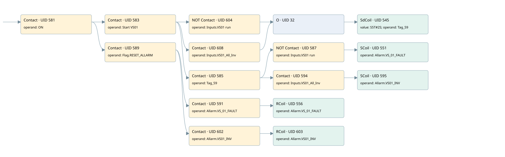

vs01
allarms 1 · 검색 색인 순서 14 · 원본 내부 NID 추정 16
백업 PLF 원본의 3044964 바이트 위치에서 복원한 XML. 검색 문서 1794의 객체 키 161022006062000000000000와 연결했다. 이름 해석 16/16개. 남은 RefId는 상수 또는 미해석 참조다.
연결 구조 다시 그리기
원본 Part/PCon/Wire를 이용한 연결도다. TIA 화면의 래더 배치 또는 실행 결과를 재현한 그림은 아니다. 핀 연결은 아래 표와 원본 XML을 기준으로 읽는다. 노드 위에 마우스를 두면 피연산자 이름을 볼 수 있다.

접점·코일·블록과 피연산자
| Part UID | Gate | Negated 핀 | 연결 피연산자 |
|---|---|---|---|
| 581 | Contact | operand = ON | |
| 583 | Contact | operand = Start VS01 | |
| 604 | Contact | operand | operand = Inputs.VS01 run |
| 608 | Contact | operand = Inputs.VS01_All_Inv | |
| 32 | O | ||
| 545 | SdCoil | value = S5T#2S; operand = Tag_59 | |
| 585 | Contact | operand = Tag_59 | |
| 587 | Contact | operand | operand = Inputs.VS01 run |
| 551 | SCoil | operand = Allarm.VS_01_FAULT | |
| 594 | Contact | operand = Inputs.VS01_All_Inv | |
| 595 | SCoil | operand = Allarm.VS01_INV | |
| 589 | Contact | operand = Flag.RESET_ALLARM | |
| 591 | Contact | operand = Allarm.VS_01_FAULT | |
| 556 | RCoil | operand = Allarm.VS_01_FAULT | |
| 602 | Contact | operand = Allarm.VS01_INV | |
| 603 | RCoil | operand = Allarm.VS01_INV |
접점 경로를 펼친 조건식
Contact·O/A·비교기의 원본 연결을 읽기 쉽게 펼친 보조 해석이다. POWER는 전원 레일 시작을 뜻한다. 호출 블록·에지·타이머의 내부 동작과 다중 쓰기 순서는 이 표로 실행 검증하지 않았다. 미해석 핀과 RefId는 원문 연결표에서 확인한다.
| UID | 동작 | 대상 | 원본 접점 경로 | 내용 |
|---|---|---|---|---|
| 545 | SdCoil | Tag_59 | (((ON AND Start VS01) AND NOT [Inputs.VS01 run]) OR ((ON AND Start VS01) AND Inputs.VS01_All_Inv)) | 시간 동작 SdCoil; 타이머 의미 추가 확인 / 시간 인자 S5T#2S |
| 551 | SCoil | Allarm.VS_01_FAULT | (((ON AND Start VS01) AND Tag_59) AND NOT [Inputs.VS01 run]) | 조건 성립 시 Set |
| 595 | SCoil | Allarm.VS01_INV | (((ON AND Start VS01) AND Tag_59) AND Inputs.VS01_All_Inv) | 조건 성립 시 Set |
| 556 | RCoil | Allarm.VS_01_FAULT | ((ON AND Flag.RESET_ALLARM) AND Allarm.VS_01_FAULT) | 조건 성립 시 Reset |
| 603 | RCoil | Allarm.VS01_INV | ((ON AND Flag.RESET_ALLARM) AND Allarm.VS01_INV) | 조건 성립 시 Reset |
원본 배선 연결
| Wire UID | 동일 Wire 연결 끝점 |
|---|---|
| 593 | Powerrail {} ↔ Part 581.in |
| 567 | ORef 557 (ON) ↔ Part 581.operand |
| 582 | Part 581.out ↔ Part 583.in ↔ Part 589.in |
| 568 | ORef 558 (Start VS01) ↔ Part 583.operand |
| 584 | Part 583.out ↔ Part 604.in ↔ Part 608.in ↔ Part 585.in |
| 607 | ORef 605 (Inputs.VS01 run) ↔ Part 604.operand |
| 23 | Part 604.out ↔ Part 32.in1 |
| 611 | ORef 609 (Inputs.VS01_All_Inv) ↔ Part 608.operand |
| 33 | Part 608.out ↔ Part 32.in2 |
| 34 | Part 32.out ↔ Part 545.in |
| 569 | ORef 559 (S5T#2S) ↔ Part 545.value |
| 570 | ORef 560 (Tag_59) ↔ Part 545.operand |
| 571 | ORef 561 (Tag_59) ↔ Part 585.operand |
| 21 | Part 585.out ↔ Part 587.in ↔ Part 594.in |
| 572 | ORef 562 (Inputs.VS01 run) ↔ Part 587.operand |
| 588 | Part 587.out ↔ Part 551.in |
| 574 | ORef 563 (Allarm.VS_01_FAULT) ↔ Part 551.operand |
| 30 | ORef 31 (Inputs.VS01_All_Inv) ↔ Part 594.operand |
| 29 | Part 594.out ↔ Part 595.in |
| 601 | ORef 597 (Allarm.VS01_INV) ↔ Part 595.operand |
| 576 | ORef 564 (Flag.RESET_ALLARM) ↔ Part 589.operand |
| 22 | Part 589.out ↔ Part 591.in ↔ Part 602.in |
| 577 | ORef 565 (Allarm.VS_01_FAULT) ↔ Part 591.operand |
| 592 | Part 591.out ↔ Part 556.in |
| 579 | ORef 566 (Allarm.VS_01_FAULT) ↔ Part 556.operand |
| 24 | ORef 25 (Allarm.VS01_INV) ↔ Part 602.operand |
| 26 | Part 602.out ↔ Part 603.in |
| 27 | ORef 28 (Allarm.VS01_INV) ↔ Part 603.operand |
식별자 해석 근거 16개
| ORef UID | RefId | 이름 | IdentXmlPart 파일 | 해석 방법 |
|---|---|---|---|---|
| 557 | 1 | ON | 0658-IdentXmlPart.xml | UID/RID + search-text + NID agreement |
| 558 | 65 | Start VS01 | 0658-IdentXmlPart.xml | UID/RID + search-text + NID agreement |
| 605 | 279 | Inputs.VS01 run | 0657-IdentXmlPart.xml | UID/RID + search-text + NID agreement |
| 609 | 280 | Inputs.VS01_All_Inv | 0657-IdentXmlPart.xml | UID/RID + search-text + NID agreement |
| 560 | 66 | Tag_59 | 0658-IdentXmlPart.xml | UID/RID + search-text + NID agreement |
| 559 | 28 | S5T#2S | 0656-IdentXmlPart.xml | literal candidate: UID/RID/NID + nearby named declarations + search-text agreement |
| 561 | 66 | Tag_59 | 0658-IdentXmlPart.xml | UID/RID + search-text + NID agreement |
| 562 | 279 | Inputs.VS01 run | 0657-IdentXmlPart.xml | UID/RID + search-text + NID agreement |
| 563 | 68 | Allarm.VS_01_FAULT | 0657-IdentXmlPart.xml | UID/RID + search-text + NID agreement |
| 31 | 280 | Inputs.VS01_All_Inv | 0657-IdentXmlPart.xml | UID/RID + search-text + NID agreement |
| 597 | 218 | Allarm.VS01_INV | 0657-IdentXmlPart.xml | UID/RID + search-text + NID agreement |
| 564 | 13 | Flag.RESET_ALLARM | 0657-IdentXmlPart.xml | UID/RID + search-text + NID agreement |
| 565 | 68 | Allarm.VS_01_FAULT | 0657-IdentXmlPart.xml | UID/RID + search-text + NID agreement |
| 566 | 68 | Allarm.VS_01_FAULT | 0657-IdentXmlPart.xml | UID/RID + search-text + NID agreement |
| 25 | 218 | Allarm.VS01_INV | 0657-IdentXmlPart.xml | UID/RID + search-text + NID agreement |
| 28 | 218 | Allarm.VS01_INV | 0657-IdentXmlPart.xml | UID/RID + search-text + NID agreement |
검색 코드 보조 자료
참조 명칭을 찾기 위한 자료이며 실행 순서나 AND/OR 관계는 위 연결표로 확인한다.
"on" "start vs01" "inputs"."vs01 run" "tag_59" s5t#2s "flag".reset_allarm "allarm".vs_01_fault "allarm".vs_01_fault "allarm".vs01_inv "allarm".vs01_inv "inputs".vs01_all_inv "tag_59" "inputs"."vs01 run" "allarm".vs_01_fault "inputs".vs01_all_inv "allarm".vs01_inv